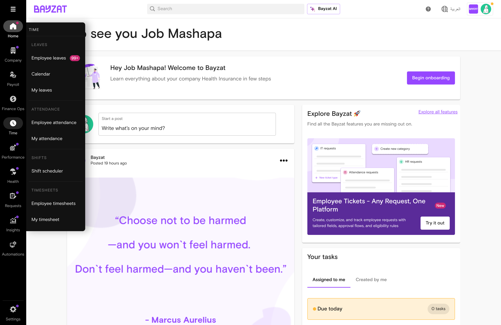
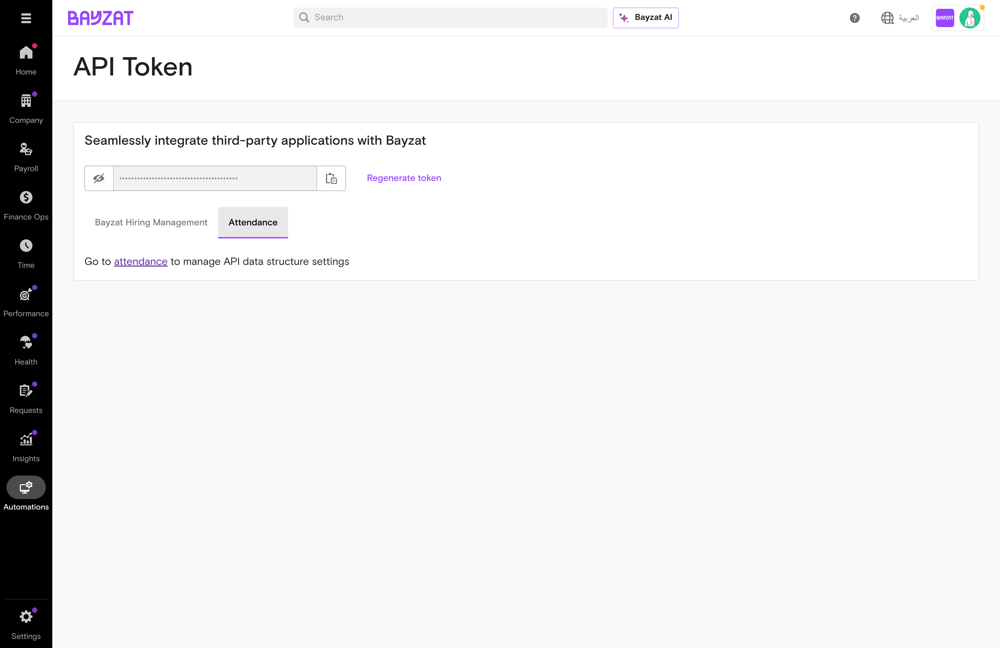
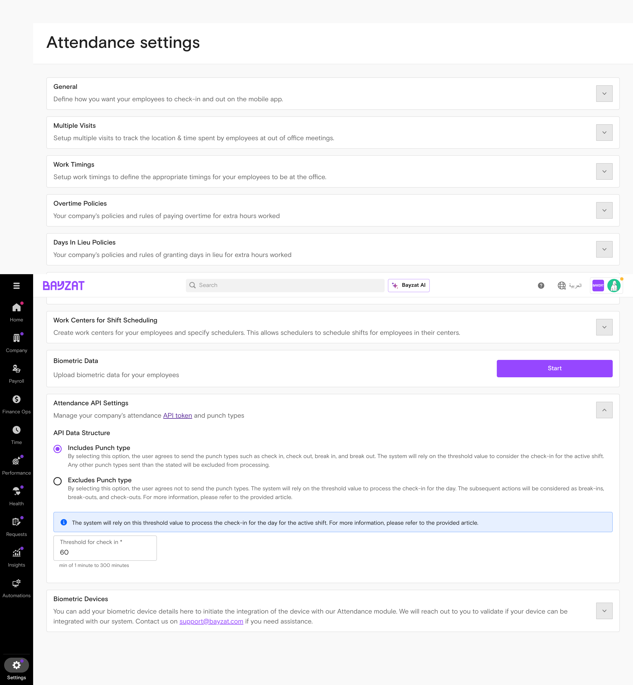
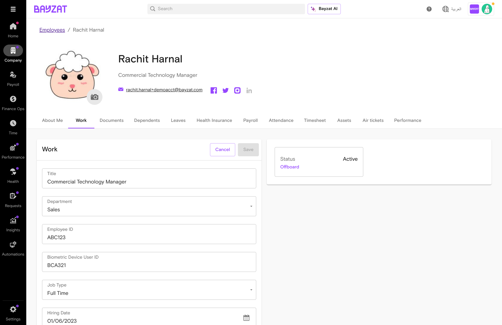
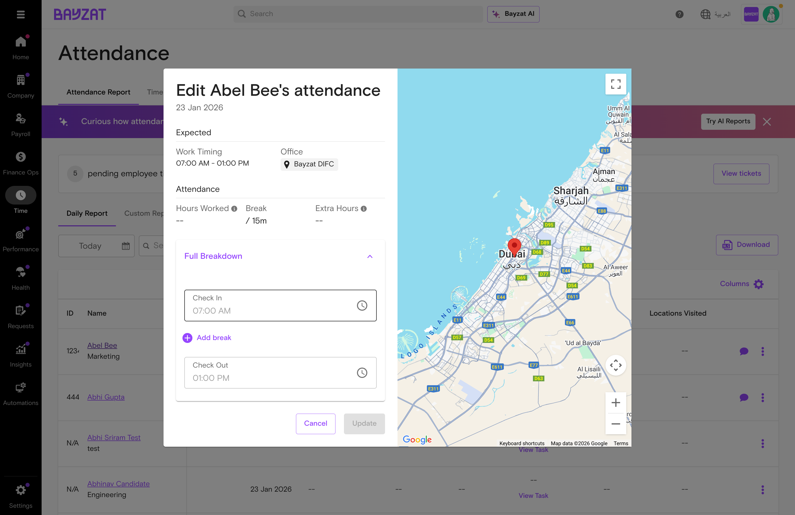
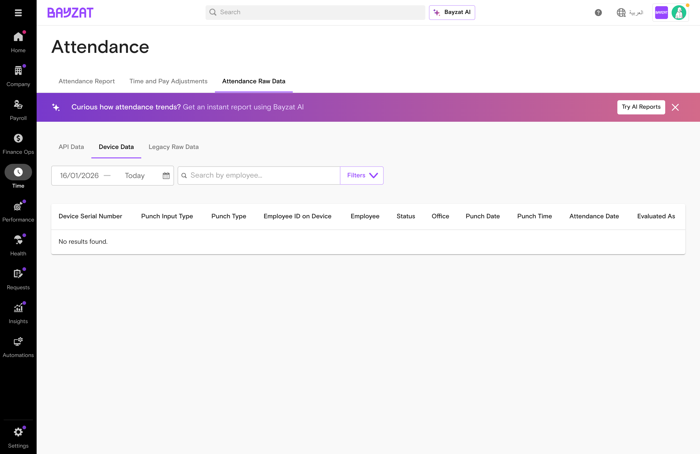

Automate time tracking with biometric devices and facial recognition technology
Biometric Attendance management interface in Bayzat HR
What is Biometric Attendance?
Overview
Biometric Attendance enables organizations to capture employee check-in and check-out times using biometric devices (fingerprint scanners, RFID readers) or facial recognition technology through the Bayzat mobile app. The system integrates with third-party biometric hardware via API, syncing attendance data automatically with employee schedules, shift assignments, and attendance reports. This eliminates manual time entry, reduces attendance fraud, and provides accurate data for payroll processing and compliance reporting.
Key Benefits
Accurate Time Tracking: Biometric authentication eliminates buddy punching and ensures employees physically check in at designated locations
Automated Data Sync: Attendance data flows automatically from biometric devices to Bayzat, reducing manual data entry and errors
Flexible Authentication Methods: Support for fingerprint, RFID, and facial recognition accommodates different workplace environments
Mobile Facial Recognition: Employees can check in using facial recognition on their mobile devices when away from fixed biometric terminals
Integration with Shift Scheduler: Attendance data automatically links to employee shift schedules for accurate overtime and absence tracking
Reduce attendance processing time from hours to minutes while ensuring accurate payroll data—eliminating manual spreadsheet reconciliation and data entry errors
Shift Managers
Monitor employee check-ins, verify attendance against shift schedules, edit attendance records, and track overtime
Make real-time staffing decisions based on actual attendance data rather than relying on manual logs or delayed reports
Employees
Check in and out using biometric devices or facial recognition and view their attendance history
Eliminate time clock disputes and ensure accurate pay by capturing precise check-in times—without manual timesheets or manager approvals for routine attendance
IT Administrators
Integrate third-party biometric devices with Bayzat API, configure device serial numbers and office assignments, and troubleshoot sync issues
Enable automated attendance tracking without building custom integrations—reducing implementation time from months to weeks while maintaining data security
Payroll Administrators
Export attendance data for payroll processing, verify overtime hours, and reconcile attendance with leave records
Uncover discrepancies between scheduled and actual hours before payroll runs, preventing costly corrections and employee disputes after payment
Product Foundation Overview
How Biometric Attendance Fits
Biometric Attendance is an authentication layer that captures employee check-ins via fingerprint, RFID, or facial recognition. Data syncs to Bayzat and feeds into attendance reports, overtime calculations, and payroll.
Mental model: Biometric Device/App → API Sync → Attendance Record → Shift Validation → Payroll
Biometric data provides tamper-proof attendance records. Changes to device configuration affect all future syncs for assigned employees.
Key Decisions Before Setup
Answer these questions before configuring biometric attendance:
Authentication method? — Fingerprint, RFID, facial recognition, or combination?
Device or mobile? — Fixed biometric terminals, mobile app, or both?
Multi-location? — Different devices per office location?
Fallback options? — What happens when facial recognition fails?
Related Features
Shift Scheduler — Defines schedules that biometric attendance validates against
Attendance Reports — Displays biometric check-in data with scheduled shifts
Time Off Management — Integrates to account for approved absences
Overtime Requests — Uses biometric data for overtime calculations
Payroll Processing — Consumes attendance data for salary calculations
Mobile App — Provides facial recognition check-in capability
Prerequisites & Requirements
Requirement
Description
Status
Biometric Hardware
Third-party devices compatible with Bayzat API
Required for device-based
API Integration
Technical setup to connect devices to Bayzat
Required for auto sync
Employee Biometric IDs
Unique identifiers matching in Bayzat and devices
Required
Office Locations
Defined locations for device assignment
Required for multi-location
Mobile App + Camera
App installed with camera permissions granted
Required for facial recognition
Reference Photos
Employee facial images for matching
Required for facial recognition
⚠️ Known Configuration Gaps
Several critical limitations affect biometric attendance implementation:
No Automatic Device Discovery: Devices must be manually configured with serial numbers and office assignments (TSSD-2792)
Limited Data Sync Window: Attendance data older than one week cannot be processed after suspension (TSSD-2381)
Integration Complexity: Not all biometric devices integrate seamlessly; some require developer involvement (TSSD-2869)
Incomplete API Documentation: Integration guidance is unclear or outdated (TSSD-2349)
User Journey
End-to-End Journey: Biometric Attendance Setup
From system configuration through daily attendance tracking.
Device Type Selection: Choose between physical biometric devices, facial recognition via mobile app, or both based on office setup and security requirements
Facial Recognition Configuration: Decide retry limits (how many attempts employees get) and fallback options (what happens after max retries)
Employee Eligibility: Determine which employees require biometric attendance versus standard time tracking
Location Validation: Configure whether to enforce strict location matching between scheduled shifts and actual check-in locations
Expected Outcomes at Each Stage
Stage
Expected Outcome
Success Indicator
System Configuration
Biometric attendance enabled with configured settings
Settings saved successfully; facial recognition parameters defined
Device Registration
All biometric devices registered and assigned to offices
Devices appear in device management list with correct office assignments
Biometric ID Setup
Every employee has a biometric ID matching their device enrollment
Biometric IDs visible in employee profiles; no ID mismatches
Facial Recognition Enrollment
Reference photos captured and stored for all eligible employees
Employees can successfully check in using facial recognition
Daily Check-In/Check-Out
Attendance records created with accurate timestamps and locations
Check-ins appear in attendance reports within expected timeframes
Attendance Monitoring
Real-time visibility into employee attendance versus schedules
Reports show complete data for all employees; no missing records
Reporting and Analysis
Accurate attendance data available for payroll and compliance
Reports match actual employee work hours; audit trail complete
Typical Use Case Scenarios
Manufacturing Facility with Shift Workers
A manufacturing company uses physical biometric devices at factory entrances. Shift workers clock in/out using fingerprint scanners. The system tracks attendance across multiple shifts, validates employees are checking in at their assigned factory location, and generates reports for payroll processing.
Multi-Office Organization with Mobile Workforce
A company with employees working across different office locations enables facial recognition via the mobile app. Employees check in using their smartphones, and the system validates their location against scheduled shifts. Administrators monitor attendance centrally and identify location mismatches.
Hybrid Work Environment
An organization combines biometric devices for office-based staff with mobile app facial recognition for field workers. The system provides unified attendance tracking regardless of work location, with integrated reporting showing all attendance types in one view.
⚠️ Data Sync Window Limitation
Impact: Attendance data older than one week cannot be processed or recovered after suspension. If biometric device integration is paused or fails, historical data beyond the one-week window is permanently lost.
Workaround: No workaround provided. Ensure continuous device connectivity and monitor sync status daily.
Reference: TSSD-2381
Feature Discovery
How to Access
Biometric attendance functionality is distributed across multiple areas of the Bayzat platform, depending on the task you need to perform. Below are the primary entry points for different user roles and activities.
Navigation Paths

Accessing Biometric Attendance through the Time menu in the main navigation
For HR Administrators
Attendance Reports and Management:
Time → Employee Attendance
This is the primary location for viewing attendance data, checking employee schedules, reviewing actual check-in/check-out times, and editing attendance records. The Employee Attendance section integrates with the shift scheduler to show comprehensive workforce attendance.
Access individual employee profiles to update biometric IDs. You can enter the biometric ID that matches the employee's enrollment on the physical device or upload biometric IDs in bulk via Excel.
Configure facial recognition parameters including retry limits, fallback behavior, eligible employees, and reference photo management. This is where you enable facial recognition company-wide.
Facial Recognition configuration in Attendance Settings
Register new biometric devices by manually entering brand name, model, serial numbers and assigning them to office locations. Device management requires manual configuration—automatic discovery is not available.
For Employees
Mobile App Check-In (Facial Recognition):
Bayzat Mobile App → Attendance → Check In/Out
Employees use the mobile app to check in and out using facial recognition. The app accesses the device camera to scan the employee's face and validate against their stored reference photo.
Quick Access Methods
Dashboard Widget: If configured, an attendance summary widget may appear on the main dashboard showing recent check-ins
Mobile App Shortcuts: The Bayzat mobile app provides quick access to the Check In/Out function from the home screen
Direct URL Patterns: Attendance reports can be accessed directly at /time/attendance
Check in/out via facial recognition, view own attendance
Note: Physical biometric devices do not require navigation through the Bayzat platform. Employees interact directly with the device hardware (fingerprint scanner, facial recognition terminal, etc.) at their office location. Attendance data syncs automatically to the Bayzat system.
Feature Discovery Tips
Help Documentation: Access in-app help by clicking the question mark icon in the top navigation bar
Role-Based Visibility: Menu options vary based on user permissions. If you cannot see attendance management options, verify your role includes Time & Attendance permissions
Mobile vs Desktop: Facial recognition check-in is only available via the mobile app. Desktop users can view attendance reports and manage settings but cannot perform biometric check-ins
⚠️ Manual Device Configuration Required
Impact: Users must manually add devices with serial numbers and office assignments; no automatic discovery is available. This increases setup time and risk of configuration errors.
Workaround: No workaround provided. Maintain accurate device inventory documentation.
Reference: TSSD-2792
Initial Setup
First-Time Configuration Steps
Setting up biometric attendance requires careful configuration to ensure accurate tracking and seamless employee experience. Follow these steps in order to configure the system properly.
Step 1: Enable Biometric Attendance
Navigate to Settings → Attendance Settings
Locate the Biometric Attendance section
Toggle the Enable Biometric Attendance switch to ON
Review and accept any terms or compliance notices related to biometric data collection
Click Save to activate the feature
Prerequisite: Ensure your Bayzat subscription includes biometric attendance functionality. Contact your account manager if this feature is not visible in your settings.
Step 2: Register Biometric Devices (If Using Physical Devices)
Navigate to Settings → Attendance
Scroll down and expand the Biometric Devices section
Click Add new
Enter the device details:
Brand Name: The manufacturer of the device (e.g., "ZKTeco")
Model: The device model number
Serial Number: The unique identifier from the biometric device (required)
Office: Select the office location for this device (required)
Device data structure: Choose whether the device includes or excludes punch types
Threshold for check in: Set the time threshold in minutes (1-300 minutes, required)
Click Save
Repeat for each biometric device in your organization
Add new biometric device form in Settings → Attendance → Biometric Devices
⚠️ No Automatic Device Discovery
Impact: Devices must be registered manually. There is no automatic network discovery or plug-and-play functionality, which can lead to configuration delays and errors.
Workaround: No workaround provided. Maintain a master spreadsheet of all device serial numbers and office assignments before beginning setup.
Reference: TSSD-2792
Configure Attendance API for Device Integration
When integrating biometric devices or third-party systems that send attendance data via API, you must configure the API token and data structure settings.
Accessing the API Token
You can access the Attendance API Token through two paths:
Path 1: Through Automations
Navigate to Automations in the left sidebar
Click API Token
Select the Attendance tab
Path 2: Through Settings
Navigate to Settings → Attendance
Scroll down to the Attendance API Settings section
Click the API token link in the description

API Token page accessed through Automations showing the Attendance tab
Managing the API Token
View Token: Click the eye icon to reveal the full API token. The token is hidden by default for security.
Copy Token: Click the copy icon to copy the API token to your clipboard. Use this token when configuring your biometric device or third-party integration.
Regenerate Token: Click Regenerate token to create a new API token. This immediately invalidates the old token.
Important: When you regenerate the API token, any existing integrations using the old token will immediately stop working. Ensure you update all connected biometric devices and third-party systems with the new token.
Configure API Data Structure
Access this setting through Settings → Attendance → Attendance API Settings:

Attendance API Settings with data structure options and check-in threshold
Includes Punch Type (Recommended)
Select this option when your biometric device sends explicit punch types (check in, check out, break in, break out)
The system uses the threshold value to determine which shift the check-in applies to
Any unrecognized punch types are excluded from processing
Excludes Punch Type
Select this option when your biometric device does not send punch type information
The system uses the threshold value to identify the first punch as check-in
Subsequent punches are automatically classified as break-in, break-out, and check-out
Threshold for Check-in
The threshold value (1-300 minutes) determines how the system associates punches with active shifts. When a punch is received, the system checks if it falls within the threshold time before or after a scheduled shift. The default threshold is 60 minutes.
Example: With a 60-minute threshold and a shift starting at 9:00 AM, a punch received anytime between 8:00 AM and the shift end time would be considered a potential check-in for that shift.
Step 3: Configure Employee Biometric IDs
Choose one of two methods to assign biometric IDs to employees:
Method A: Individual Assignment
Navigate to Employees
Select an employee from the list
Select the Work tab
Scroll to find the Biometric Device User ID field
Enter the ID that matches the employee's enrollment on the physical device
Click Save
Repeat for each employee

Individual employee Biometric ID configuration in employee profile (Work tab)
Method B: Bulk Upload via Excel
Navigate to Employees → Bulk Actions → Upload Biometric IDs
Download the Excel template
Fill in the template with:
Employee Name: Select from dropdown (direct Employee ID input not supported)
Biometric ID: The ID from the biometric device
Upload the completed Excel file
Review the validation summary
Click Confirm Upload
Bulk upload interface for importing biometric IDs via Excel
⚠️ Bulk Upload Restricts Direct Employee ID Input
Impact: Users must select employee names from dropdowns rather than entering Employee IDs directly, limiting data entry flexibility and slowing down bulk operations.
Workaround: No workaround provided. Plan for additional time when performing bulk uploads.
Reference: TSSD-2658
Step 4: Enable Facial Recognition
Navigate to Settings → Attendance
Expand the General section
Toggle Enable facial recognition to ON
This setting allows employees to scan their face during check-in/out, with the system verifying their identity against a reference photo
Click Update to save the changes
Note: The "Enable Image Capture" setting (which requires employees to take a picture when checking in/out) must also be enabled for facial recognition to work.
Step 5: Employee Facial Recognition Enrollment
If facial recognition is enabled, employees must capture reference photos:
Instruct employees to open the Bayzat Mobile App
Employees navigate to Attendance → Facial Recognition Setup
Employees review and accept the Consent for Facial Recognition prompt
Employees follow the on-screen instructions to capture their face:
Impact: Lack of image validation creates security vulnerability allowing authentication bypass. Employees can potentially submit blank or invalid images and still check in successfully.
Workaround: No workaround provided. Implement manual audits of facial recognition check-ins to identify suspicious patterns.
Reference: OS-3229
Required Settings to Configure
Setting
Description
Required/Optional
Biometric Attendance Enabled
Master switch to activate biometric attendance functionality
Required
Device Registration
Serial numbers and office assignments for physical devices
Required (if using physical devices)
Employee Biometric IDs
Unique IDs matching device enrollments for each employee
Required
Facial Recognition Enabled
Toggle to activate mobile app facial recognition check-in
Optional
Facial Recognition Retry Limit
Number of attempts before fallback behavior triggers
Required (if facial recognition enabled)
Facial Recognition Fallback
Action to take when max retries exceeded
Required (if facial recognition enabled)
Recommended Default Values
Facial Recognition Retry Limit: 3 attempts (balances security with user experience)
Facial Recognition Fallback: Allow manual check-in with supervisor notification (prevents employee lockout while maintaining oversight)
Biometric Data Sync Frequency: Every 15 minutes (ensures near real-time attendance visibility)
Verification Steps
After completing initial setup, verify the configuration:
Test Device Connectivity:
Have a test employee check in using a physical biometric device
Verify the check-in appears in Time → Employee Attendance within 15 minutes
Confirm the correct office location is recorded
Test Facial Recognition (if enabled):
Have a test employee check in using the mobile app
Verify facial recognition succeeds on first attempt
Test retry behavior by intentionally failing recognition
Confirm fallback behavior works as configured
Verify Biometric ID Accuracy:
Cross-reference employee biometric IDs in Bayzat with device enrollments
Ensure no duplicate IDs exist
Confirm all active employees have assigned IDs
Review Attendance Reports:
Generate an attendance report for the test period
Verify all check-ins appear with accurate timestamps and locations
Confirm shift schedules display correctly alongside actual attendance
⚠️ Biometric Data Sync Limited to One-Week Window
Impact: Attendance data older than one week cannot be processed or recovered after suspension. If device integration fails or is paused, historical data beyond seven days is permanently lost.
Workaround: No workaround provided. Monitor device connectivity daily and address sync failures immediately.
Reference: TSSD-2381
Setup Complete: Once verification steps pass, biometric attendance is ready for production use. Communicate the new system to employees and provide training on check-in procedures.
Feature Usage
Common Workflows
Update Biometric IDs
HR administrators configure biometric IDs individually or via bulk Excel upload to link employee records with devices.
View and Edit Attendance
Administrators review attendance reports, compare against schedules, and make corrections as needed.
The Biometric Attendance feature supports several key workflows for managing employee attendance data. Due to system limitations, traditional CRUD operations are not available through the standard interface. Instead, users interact with attendance data through specialized workflows.
Note: Standard create, read, update, and delete operations are not available for biometric attendance records through the web interface. Attendance data is managed through device integrations, bulk uploads, and specialized reporting tools.
Update Biometric IDs
HR administrators must configure biometric IDs to link employee records with physical biometric devices. This ensures attendance punches are correctly attributed to the right employees.
Individual Biometric ID Update
Log into your Bayzat account with administrator privileges
Navigate to Employees section
Search for and select the employee whose biometric ID needs updating
Locate the Biometric ID field in the employee profile
Enter the exact ID that matches the biometric device registration
Click Save Changes
Verify the ID matches the device by testing a check-in
Bulk Biometric ID Upload
Navigate to Employees → Bulk Actions
Download the Excel template for biometric ID updates
Fill in the template with:
Employee names (selected from dropdown)
Corresponding biometric device IDs
Upload the completed Excel file
Review the validation summary for errors
Confirm and save the bulk update
Assign shifts to employees after ID configuration
⚠️ Biometrics mass upload restricts direct Employee ID input
Impact: Users must select employee names from dropdowns, limiting data entry flexibility.
Workaround: No workaround provided.
Reference: TSSD-2658
Precision Required: Biometric IDs must match exactly with the IDs registered on physical devices. Even small discrepancies (extra spaces, different capitalization) will prevent attendance data from syncing correctly.
View and Edit Attendance Reports
The Attendance page provides comprehensive visibility into employee attendance patterns with multiple report types and raw data views.
Navigate to Time → Employee attendance
The page displays three main tabs:
Attendance Report: Daily Report, Custom Report, and Location Report views
Time and Pay Adjustments: Manage attendance corrections
Attendance Raw Data: View API Data, Device Data, and Legacy Raw Data
In the Attendance Report tab, select the date using the date picker
Use the search bar to find employees by name or employee ID
Click Filters to apply advanced filters:
Status: Absent, Present, Weekend, Day Off, Public Holiday, On Leave
Schedule: Working Day, Day Off, Weekend, Public Holiday, On Leave
Click the Columns button to customize which columns are displayed
Use the Download button to export the report
Use the action buttons at the end of each row to edit attendance records

Attendance record edit form with check-in, check-out, and break time fieldsEmployee Attendance report with check-in/check-out times and schedule comparison
View Biometric Device Data
The Attendance Raw Data tab provides direct access to biometric punch data from integrated devices. This is essential for troubleshooting device integration issues and verifying that biometric data is being captured correctly.
Navigate to Time → Employee attendance
Click the Attendance Raw Data tab
Select the appropriate data source tab:
API Data: Attendance data received via API integrations
Device Data: Raw punch data from biometric devices (fingerprint scanners, etc.)
Legacy Raw Data: Historical data from previous system versions
Device Data View
The Device Data tab displays raw biometric punch records from physical devices. This view helps administrators verify that biometric devices are correctly recording employee attendance.
Device Data columns:
Device Serial Number: The unique identifier of the biometric device that recorded the punch
Punch Input Type: The method used for the punch (e.g., fingerprint, card)
Punch Type: Whether the punch is a check-in or check-out
Employee ID on Device: The biometric ID stored on the device (must match employee's Biometric Device User ID)
Employee: The matched employee name
Status: Processing status of the punch record
Office: The office location associated with the device
Punch Date: The date the punch was recorded
Punch Time: The exact time the punch was recorded
Attendance Date: The attendance date the punch applies to
Evaluated As: How the system evaluated this punch (check-in, check-out, etc.)

Device Data view showing raw biometric punch data from physical devices
API Data View
The API Data tab displays attendance records received through API integrations. This is used when biometric data is pushed to Bayzat from external systems.
API Data columns:
Name: Employee name
Employee ID: The employee's ID in the system
Email: Employee email address
Status: Processing status
Punch Date Time: Combined date and time of the punch
Punch Type: Type of punch (check-in/check-out)
Attendance Date: The attendance date
Evaluated As: System evaluation of the punch
API Data view showing attendance records received via API integrations
Troubleshooting Tip: If employee punches are not appearing in attendance reports, check the Device Data or API Data tabs first. If raw data exists but isn't reflected in reports, verify that the Employee ID on Device matches the employee's Biometric Device User ID configured in their profile (Work tab).
⚠️ API integration lacks office location details in attendance reports
Impact: Custom reports cannot display office information for API-integrated attendance punches.
Workaround: No workaround provided.
Reference: TSSD-4151
⚠️ Logs for shifts not showing due to admin panel bug
Impact: Incomplete audit logs for shift scheduler and hrcore entities limit historical data tracking.
Workaround: No workaround provided.
Reference: TSSD-4634
Configure Facial Recognition
Administrators can enable facial recognition as an additional biometric authentication method for attendance tracking. The system uses two key verification mechanisms:
Image Comparison: When an employee attempts to check in, the system captures a live image and compares it against the stored reference photo using facial feature matching algorithms. The comparison analyzes facial geometry, key landmark positions, and unique facial characteristics to verify identity.
Liveliness Validation: To prevent spoofing attacks (such as holding up a photo or video of someone else), the system performs anti-spoofing checks that verify a real, live person is present. This includes detecting natural facial movements, depth perception, and other indicators that distinguish a live face from a static image or recording.
Navigate to Settings → Attendance → Facial Recognition
Toggle Enable Facial Recognition to ON
Configure validation settings:
Set image comparison sensitivity threshold
Enable liveliness detection for anti-spoofing protection
Configure confidence score requirements
Configure retry limits:
Set maximum number of facial scan attempts
Define retry cooldown period
Set fallback behavior:
Allow manual check-in after failed attempts
Require supervisor approval
Block check-in entirely
Select eligible employees:
Choose specific departments
Select individual employees
Apply to all employees
Manage reference photos:
Upload employee photos manually
Allow employees to capture their own reference images
Set photo quality requirements
Review configuration summary
Click Save Configuration
Facial Recognition configuration panel in Attendance Settings
Architectural constraints prevent direct retry navigation for failure scenarios.
No workaround provided.
OS-3137
No standardized consent tracking for facial recognition
No built-in consent pop-up or management for camera access in mobile/kiosk modes.
No workaround provided.
OS-3047
Employee Check-in with Facial Recognition
Once facial recognition is enabled, employees can use their mobile devices to check in and out using facial biometric authentication.
First-Time Setup
Open the Bayzat mobile app
Navigate to Attendance section
When prompted, grant camera access permissions
Read and accept the facial recognition consent agreement
Follow on-screen instructions to capture reference photo:
Position face within the frame
Ensure good lighting
Remove glasses if prompted
Capture multiple angles if required
Wait for confirmation that reference photo is accepted
Daily Check-in Process
Open the Bayzat mobile app
Navigate to Attendance
Tap Check In or Check Out
Position your face within the camera frame
The system performs verification:
Liveliness check: Confirms you are a live person (may prompt you to blink, move your head, or show different angles)
Image comparison: Matches your live image against your stored reference photo
Wait for facial recognition to complete (both validations must pass)
Receive confirmation of successful check-in/out
View attendance record in your attendance history
Handling Failed Recognition
If facial recognition fails, you will see an error message
Retry the scan (up to configured retry limit)
If retries are exhausted, follow the fallback process configured by your company:
Request manual check-in from supervisor
Submit attendance regularization ticket
Contact HR support
Tip: For best results, ensure you are in a well-lit area and that your face is clearly visible to the camera. Remove accessories that might obscure facial features.
Configure Biometric Devices
Physical biometric devices (fingerprint scanners, facial recognition terminals) must be manually configured in the system.
Navigate to Settings → Attendance
Scroll down and expand the Biometric Devices section
Click Add new
Enter device details:
Brand Name: The manufacturer of the device (e.g., "ZKTeco")
Model: The device model number
Serial Number: The unique identifier from the device (required)
Office: Select the office location (required)
Device data structure: Choose whether the device includes or excludes punch types
Threshold for check in: Set the time threshold in minutes (1-300, required)
Click Save
Repeat for each biometric device in your organization
Biometric Devices configuration in Attendance Settings
⚠️ Manual configuration required for biometric devices
Impact: Users must manually add devices with serial numbers and office assignments; no automatic discovery.
Workaround: No workaround provided.
Reference: TSSD-2792
Issue
Impact
Workaround
Reference
Integration complexity varies by biometric device and client technical resources
Not all devices integrate seamlessly; some require developer involvement.
No workaround provided.
TSSD-2869
Workflow Integration
Workflow Integration
No Workflow Integration Available: biometric-attendance does not currently integrate with Bayzat Workflows. No triggers or actions are available for automating attendance-related processes.
Potential Workflow Scenarios
While workflow integration is not currently available, the following scenarios illustrate how automation could add value to attendance management processes:
Scenario 1: Automatic Overtime Request Creation
Potential Benefit: Automatically create overtime requests when employees check out beyond their scheduled shift end time, reducing manual data entry and ensuring policy compliance.
Trigger: Employee checks out more than 30 minutes after scheduled shift end time
Action: Create overtime request ticket and notify employee's manager
Business Value: Eliminate manual overtime request submission, ensure all overtime is properly documented and approved, reduce payroll discrepancies
Scenario 2: Late Arrival Notifications
Potential Benefit: Alert managers immediately when employees arrive late, enabling real-time workforce management and proactive communication.
Trigger: Employee checks in more than 15 minutes after scheduled start time
Action: Send notification to direct manager with attendance details
Business Value: Enable real-time attendance monitoring, allow managers to adjust shift coverage, improve accountability without manual report checking
Scenario 3: Missing Check-in/Check-out Reminders
Potential Benefit: Automatically remind employees who forgot to check in or check out, reducing incomplete attendance records.
Trigger: Scheduled shift time passes without corresponding check-in or check-out punch
Action: Send reminder notification to employee
Business Value: Reduce incomplete attendance records, minimize administrative burden of chasing missing punches, improve data accuracy for payroll
Scenario 4: Biometric Sync Failure Alerts
Potential Benefit: Notify IT and HR teams immediately when biometric device data fails to sync, preventing data loss and ensuring timely troubleshooting.
Trigger: Biometric device fails to sync attendance data for more than 2 hours
Action: Create high-priority support ticket and alert IT team via email/Slack
Business Value: Prevent attendance data loss, enable proactive device maintenance, reduce employee frustration from missing attendance records
Scenario 5: Location Mismatch Warnings
Potential Benefit: Flag potential attendance fraud when employees check in at locations that don't match their scheduled shift office, enabling immediate investigation.
Trigger: Employee checks in at office location different from scheduled shift location
Action: Send alert to HR and direct manager, flag attendance record for review
Business Value: Detect potential time theft or scheduling errors, ensure employees work at assigned locations, improve compliance with location-based policies
Scenario 6: Facial Recognition Failure Escalation
Potential Benefit: Automatically escalate repeated facial recognition failures to HR for investigation, identifying potential system issues or employee concerns.
Trigger: Employee fails facial recognition check-in 3 times in one week
Action: Create HR case for investigation, notify employee to update reference photo
Business Value: Identify and resolve biometric authentication issues proactively, improve employee experience, prevent attendance tracking gaps
Current Workarounds
Until workflow automation becomes available, organizations can implement these manual processes:
Scheduled Reports: Set up daily or weekly attendance reports to be emailed to managers, allowing them to manually review late arrivals, early departures, and missing punches
Manual Alerts: Train HR staff to review attendance dashboards at specific times each day and manually notify managers of attendance issues
Policy Documentation: Clearly document attendance correction procedures and what supporting documentation is required
Device Monitoring: Establish a routine for IT staff to check biometric device connectivity and data sync status
Reference Photo Updates: Schedule periodic campaigns for employees to update their facial recognition reference photos to prevent authentication failures
Note: If workflow automation becomes available in future releases, this section will be updated with specific trigger and action configurations.
Business Rules & Limitations
Business Rules & Limitations
Biometric Attendance has several known limitations that affect data synchronization, device configuration, location validation, and facial recognition functionality. Understanding these constraints helps you plan implementations and set appropriate expectations.
Critical and High-Severity Limitations
⚠️ Biometric Data Sync Failures with High-Volume Logs
Impact: System cannot consistently sync large batches of attendance data from third-party biometric devices. This affects organizations with hundreds of employees checking in simultaneously.
Workaround: No workaround provided.
Reference: TSSD-4710
⚠️ Incomplete Audit Logs for Shift Scheduler
Impact: Incomplete audit logs for shift scheduler and hrcore entities limit historical data tracking. You cannot reliably trace changes to shift assignments or employee records.
Workaround: No workaround provided.
Reference: TSSD-4634
⚠️ Weak Attendance Location Validation
Impact: System cannot prevent employees from checking in at locations different from scheduled shifts. Employees can check in from unauthorized offices or remote locations.
Workaround: No workaround provided.
Reference: TSSD-3737
⚠️ Inconsistent Policy Enforcement Between Biometric and Mobile App
Impact: Biometric attendance bypasses overtime request policies causing inconsistencies. Employees using biometric devices may not follow the same approval workflows as mobile app users.
Impact: Cannot enable facial recognition for select employees only; all must capture images. This creates privacy concerns and implementation challenges for organizations wanting phased rollouts.
Workaround: No workaround provided.
Reference: TSSD-4848
⚠️ One-Week Data Sync Window Limitation
Impact: Attendance data older than one week cannot be processed or recovered after suspension. If device connectivity is lost for more than seven days, historical data is permanently lost.
Impact: Lack of image validation creates security vulnerability allowing authentication bypass. Employees can potentially check in without proper facial verification.
Workaround: No workaround provided.
Reference: OS-3229
Medium-Severity Limitations
Issue
Impact
Workaround
Reference
API integration lacks office location details
Custom reports cannot display office information for API-integrated attendance punches.
No workaround provided.
TSSD-4151
Manual configuration required for biometric devices
Users must manually add devices with serial numbers and office assignments; no automatic discovery.
No workaround provided.
TSSD-2792
Fraud detection reports lack device ID metadata
Cannot distinguish between legitimate and fraudulent check-ins when device IDs are null.
No workaround provided.
TSSD-287
Biometrics mass upload restricts direct Employee ID input
Users must select employee names from dropdowns, limiting data entry flexibility.
No workaround provided.
TSSD-2658
Facial recognition retry limit error handling is inconsistent
No standardized error screen; users redirected unexpectedly after max retries.
Architectural constraints prevent direct retry navigation for failure scenarios.
No workaround provided.
OS-3137
Integration complexity varies by biometric device
Not all devices integrate seamlessly; some require developer involvement.
No workaround provided.
TSSD-2869
No standardized consent tracking for facial recognition
No built-in consent pop-up or management for camera access in mobile/kiosk modes.
No workaround provided.
OS-3047
UI cannot display biometric data with future timestamps
Restricts visibility of upcoming or pre-logged attendance entries.
No workaround provided.
AV-9035
Low-Severity Limitations
Biometric API integration documentation is unclear or outdated: Lack of clear guidance for integrating biometric attendance systems. (TSSD-2349)
Lack of centralized automated reporting for biometric devices: Users must manually access Looker explore links for device metadata. (TSSD-4269)
Original biometric data upload API had performance issues: Performance bottlenecks and looping issues before cache optimization. Cache implementation resolved the issue; no manual refactoring needed. (OS-824)
Business Rules Summary
Device Configuration: All biometric devices require manual setup with serial numbers and office assignments
Data Retention: Attendance data must sync within one week or it becomes unrecoverable
Facial Recognition: Must be enabled company-wide; cannot be selective by employee group
Location Validation: System uses flexible geofence radius rather than strict location enforcement
Policy Enforcement: Biometric check-ins may bypass overtime request workflows that apply to mobile app users
Audit Trail: Historical tracking for shift changes and employee records may be incomplete
Reporting: Office location data not available for API-integrated attendance records
Troubleshooting & Edge Cases
Troubleshooting & Edge Cases
This section covers common issues you may encounter when using Biometric Attendance, along with their causes and resolutions.
Common Issues
Issue
Cause
Resolution
Attendance data not appearing in reports
High-volume log ingestion failures or data sync delays exceeding one week
Check device connectivity and ensure data syncs occur at least weekly. Contact support if data is more than one week old (TSSD-4710, TSSD-2381)
Employee checked in at wrong location
Weak location validation allows check-ins from unauthorized offices
Review attendance records manually and contact HR to correct records. Consider implementing stricter geofence policies (TSSD-3737)
Facial recognition fails repeatedly
Poor lighting, incorrect camera angle, or blank image submission
Ensure adequate lighting and proper camera positioning. Verify facial recognition retry limits are configured. Check for image validation issues (OS-3136, OS-3229)
Biometric ID mismatch errors
Employee's Bayzat biometric ID doesn't match device ID
Navigate to Employees section and update biometric IDs to match device serial numbers exactly. Use bulk upload for multiple employees (TSSD-2792)
Overtime requests not triggering for biometric check-ins
Manually review overtime hours and submit requests through the standard workflow. Work with HR to reconcile policy enforcement differences (TSSD-4683)
Office location missing from custom reports
API integration doesn't include office details in attendance data
Use standard attendance reports instead of custom API-based reports for office location data (TSSD-4151)
Cannot find device metadata in reports
Centralized automated reporting not available
Access Looker explore links manually to retrieve device metadata. Contact support for assistance (TSSD-4269)
Facial recognition consent not tracked
No built-in consent management for camera access
Implement manual consent tracking process outside the system. Document employee consent separately (OS-3047)
Shift logs missing from admin panel
Incomplete audit logs for shift scheduler entities
Maintain separate documentation of shift changes. Contact support to report missing audit data (TSSD-4634)
Bulk upload requires dropdown selection instead of Employee ID
System restricts direct Employee ID input in mass upload
Use dropdown menus to select employees by name. For large uploads, break into smaller batches (TSSD-2658)
Known Limitations
Data Recovery Window: Attendance data older than one week cannot be recovered after device connectivity loss. Ensure devices sync at least weekly to prevent permanent data loss.
Selective Facial Recognition: Facial recognition must be enabled for all employees company-wide. You cannot enable it for specific departments or employee groups only.
Device Integration Complexity: Not all biometric devices integrate seamlessly with Bayzat. Some devices require developer involvement and custom API work.
Future-Dated Attendance: The UI cannot display biometric data with future timestamps, restricting visibility of pre-logged or scheduled attendance entries.
Edge Cases
Device Disconnection During Peak Hours: If a biometric device loses connectivity during high-traffic check-in periods (morning arrival), data may be queued locally. Ensure devices have stable network connections and sufficient local storage capacity.
Facial Recognition in Low-Light Conditions: Facial recognition accuracy decreases significantly in poorly lit environments. Install adequate lighting near check-in stations or configure fallback authentication methods.
Multiple Office Locations with Same Device Serial: If devices share serial numbers across offices, attendance data may be attributed to the wrong location. Ensure each device has a unique identifier and is correctly mapped to its physical office.
Employee Transfer Between Offices: When employees transfer to new offices, their biometric IDs must be updated to match the new location's devices. Update biometric IDs immediately upon transfer to prevent check-in failures.
Temporary Device Replacement: If a biometric device is replaced temporarily (for maintenance), attendance data from the replacement device may not sync correctly. Document device swaps and manually reconcile attendance records during the replacement period.
Facial Recognition Retry Exhaustion: When employees exceed facial recognition retry limits, they may be redirected unexpectedly without clear guidance. Configure appropriate retry limits and train employees on fallback authentication methods.
Blank Image Submission Vulnerability: The system may accept blank images for facial recognition check-ins, creating a security loophole. Monitor attendance patterns for suspicious blank image submissions and investigate anomalies.
Geofence Boundary Check-Ins: Employees near office boundaries may check in from outside the intended location due to broad geofence radius. Review check-in locations regularly and adjust geofence settings if needed.
API Integration Without Office Context: Custom integrations using the API may lose office location context in attendance records. Use standard Bayzat attendance reports for location-specific data.
Shift Schedule Changes After Check-In: If shift schedules are modified after employees have already checked in, audit logs may not reflect the original schedule. Document schedule changes separately for accurate record-keeping.
Diagnostic Steps
When troubleshooting biometric attendance issues, follow these diagnostic steps:
Verify Device Connectivity: Check that biometric devices have stable network connections and can communicate with Bayzat servers
Validate Biometric ID Mapping: Confirm employee biometric IDs in Bayzat match the IDs stored on physical devices
Check Data Sync Timing: Ensure attendance data has synced within the past week to prevent data loss
Review Facial Recognition Settings: Verify retry limits, fallback methods, and image validation settings are configured correctly
Examine Location Settings: Check geofence radius and office assignments for devices
Inspect Audit Logs: Review available audit logs for shift changes and employee record modifications (note: logs may be incomplete)
Test Alternative Authentication: If facial recognition fails, verify fallback authentication methods work correctly
Validate Policy Enforcement: Compare overtime request workflows between biometric and mobile app check-ins
Support & Resources
Support & Resources
Frequently Asked Questions
Can I enable facial recognition for only certain employees?
No. Facial recognition must be enabled company-wide for all employees. You cannot selectively enable it for specific departments or employee groups. All employees must capture reference photos if facial recognition is activated.
What happens if attendance data doesn't sync for more than a week?
Attendance data older than one week cannot be processed or recovered after device connectivity loss. To prevent permanent data loss, ensure biometric devices sync with Bayzat servers at least weekly. Monitor device connectivity regularly.
Why don't my custom reports show office locations for attendance data?
API-integrated attendance records lack office location details. Custom reports built using the API cannot display office information. Use standard Bayzat attendance reports instead, which include office location data.
How do I update biometric IDs for multiple employees?
Navigate to the Employees section and use the bulk Excel upload feature. Note that the system requires you to select employee names from dropdowns rather than entering Employee IDs directly. For large batches, break uploads into smaller groups.
Why are employees able to check in from locations different from their scheduled shifts?
The system uses flexible location validation with a broad geofence radius. It cannot strictly enforce biometric-only authentication or precise location validation. Review attendance records regularly and contact HR to correct mismatched check-ins.
What should I do if facial recognition fails repeatedly?
Ensure adequate lighting and proper camera positioning. Verify facial recognition retry limits are configured correctly. Check for image validation issues, as the system may accept blank images. Configure fallback authentication methods for employees who consistently experience failures.
Why don't overtime requests trigger for biometric check-ins?
Biometric attendance bypasses overtime request policies, causing inconsistencies with mobile app check-ins. Manually review overtime hours and submit requests through the standard workflow. Work with HR to reconcile policy enforcement differences between biometric and mobile app attendance.
How do I configure a new biometric device?
Biometric devices require manual configuration. You must add each device with its serial number and office assignment. There is no automatic device discovery. Navigate to the device management section and enter device details manually.
Can I track employee consent for facial recognition?
No built-in consent tracking exists for facial recognition. There is no standardized consent pop-up or management for camera access in mobile or kiosk modes. Implement a manual consent tracking process outside the system and document employee consent separately.
Why can't I see shift change history in the admin panel?
Audit logs for shift scheduler and hrcore entities are incomplete, limiting historical data tracking. Maintain separate documentation of shift changes and contact support to report missing audit data.
What happens if a biometric device is replaced temporarily?
Attendance data from replacement devices may not sync correctly. Document all device swaps and manually reconcile attendance records during the replacement period. Update device serial numbers in the system if the replacement is permanent.
How do I access device metadata for reporting?
Centralized automated reporting for biometric devices is not available. You must manually access Looker explore links to retrieve device metadata. Contact support for assistance navigating Looker reports.
Getting Help
If you need assistance with Biometric Attendance, the following resources are available:
HR Administrator: Your organization's HR administrator can help with employee-specific issues, biometric ID updates, attendance corrections, and policy questions.
Bayzat Support: Contact Bayzat support for technical issues, device configuration problems, data sync failures, API integration questions, and system limitations. Reference Jira ticket numbers when reporting known issues.
Knowledge Base: Search the Bayzat Knowledge Base for articles on biometric ID updates (23899767717777), attendance reports (14284706643729), facial recognition setup (39304429837841), and employee check-in procedures (39374069671057).
In-App Help: Access contextual help within the Bayzat application for guidance on specific screens and workflows.
Developer Resources: For API integrations and custom device implementations, consult Bayzat developer documentation. Note that API integration documentation may be unclear or outdated (TSSD-2349).
Implementation Support: For complex biometric device integrations that require developer involvement, engage Bayzat's implementation team to assess device compatibility and integration requirements.
Tip: When contacting support about known limitations, reference the Jira ticket number (e.g., TSSD-4710, OS-3229) to help support staff quickly understand the context of your issue.
Glossary of Terms
Glossary of Terms
Term
Definition
Biometric ID
A unique identifier assigned to each employee that links their Bayzat profile to their biometric data stored on physical attendance devices. Must match the device's internal employee ID exactly.
Biometric Device
Physical hardware (fingerprint scanner, facial recognition camera, or other biometric reader) used to authenticate employees and record attendance check-ins and check-outs.
Check-In
The action of recording an employee's arrival at work using a biometric device, mobile app, or other attendance method. Creates a timestamped attendance record.
Check-Out
The action of recording an employee's departure from work using a biometric device, mobile app, or other attendance method. Creates a timestamped attendance record.
Data Sync
The process of transferring attendance records from biometric devices to Bayzat servers. Must occur at least weekly to prevent data loss.
Device Serial Number
A unique identifier for each biometric device used for device registration, configuration, and attendance data attribution.
Facial Recognition
A biometric authentication method that uses camera technology to verify employee identity by comparing live images to stored reference photos, combined with liveliness validation to prevent spoofing.
Image Comparison
The process of analyzing a live captured facial image against a stored reference photo using facial feature matching algorithms. Compares facial geometry, landmark positions, and unique characteristics to verify identity.
Liveliness Validation
Anti-spoofing technology that verifies a real, live person is present during facial recognition check-in. Detects natural facial movements, depth perception, and other indicators to distinguish live faces from photos, videos, or masks.
Fallback Authentication
Alternative authentication methods (PIN, password, or manual entry) used when primary biometric authentication fails or is unavailable.
Geofence
A virtual geographic boundary around an office location used to validate employee check-in locations. Bayzat uses a flexible geofence radius rather than strict enforcement.
High-Volume Log Ingestion
The process of syncing large batches of attendance records from biometric devices to Bayzat servers, which can experience failures during peak usage periods.
Audit Log
A system-generated record of changes made to employee data, shift schedules, or attendance records. May be incomplete for shift scheduler and hrcore entities.
Office Assignment
The mapping of a biometric device to a specific office location, used to attribute attendance records to the correct workplace.
Overtime Request
A formal request submitted when employees work beyond their scheduled hours. May not trigger automatically for biometric check-ins due to policy enforcement inconsistencies.
Reference Photo
A stored image of an employee's face used by facial recognition systems to verify identity during check-in. Required for all employees when facial recognition is enabled company-wide.
Retry Limit
The maximum number of attempts allowed for facial recognition authentication before triggering fallback methods or error handling.
Shift Scheduler
The Bayzat module used to create, assign, and manage employee work schedules. Integrates with attendance reports to compare scheduled vs. actual work hours.
Shift Employee
An employee assigned to specific work shifts (morning, evening, night) rather than standard office hours. Requires shift schedule configuration in Bayzat.
API Integration
A programmatic connection between Bayzat and third-party biometric devices or systems, allowing automated data exchange. May lack office location details in attendance records.
Bulk Upload
A feature allowing HR administrators to update biometric IDs for multiple employees simultaneously using Excel file import. Requires dropdown selection rather than direct Employee ID input.
Device Metadata
Technical information about biometric devices including serial numbers, firmware versions, office assignments, and connectivity status. Accessible through Looker explore links.
Fraud Detection
System capabilities to identify suspicious attendance patterns or unauthorized check-ins. Limited by lack of device ID metadata in reports.
Location Validation
The process of verifying that an employee's check-in location matches their assigned office or shift location. Currently weak, allowing mismatched check-ins.
Looker
A business intelligence and reporting platform used by Bayzat for advanced data exploration and custom report generation, including device metadata access.
One-Week Sync Window
The maximum time period (seven days) during which attendance data can be recovered after device connectivity loss. Data older than one week is permanently lost.